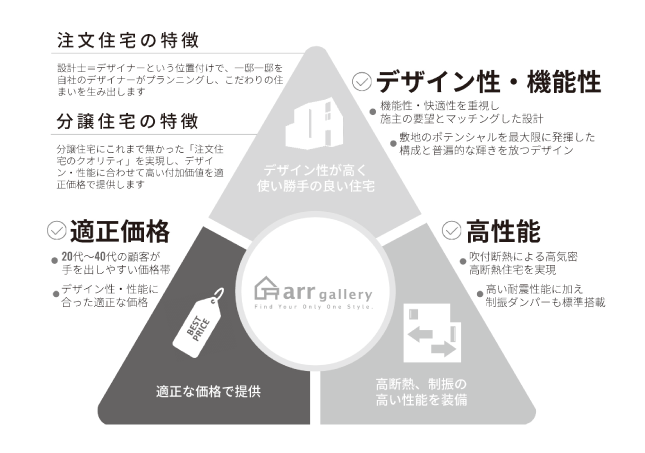
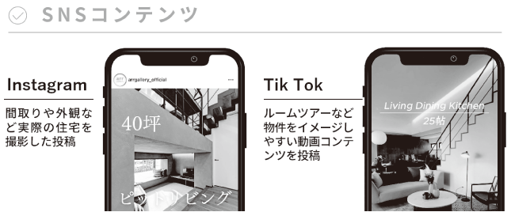
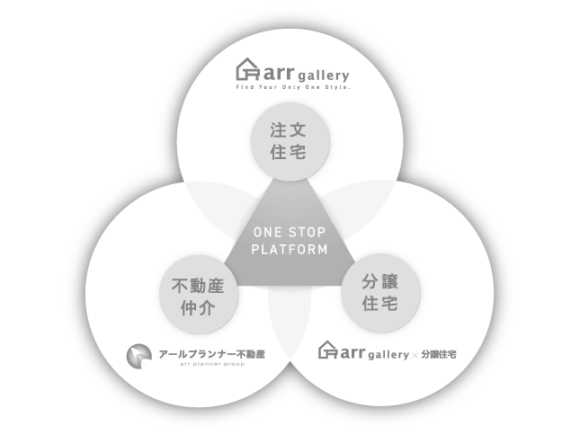
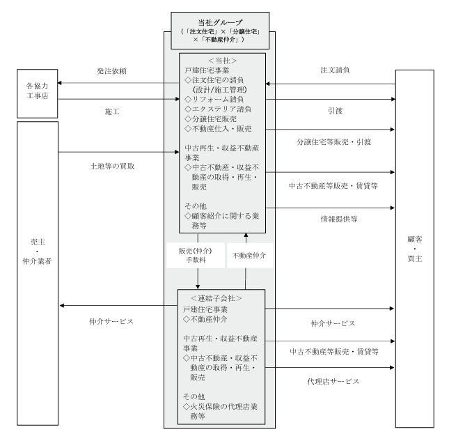

(注) １．当社は2019年６月15日付で普通株式１株につき10株、2022年２月１日付で１株につき４株の株式分割を行っております。第17期の期首に当該株式分割が行われたと仮定して、１株当たり純資産額、１株当たり当期純利益金額及び潜在株式調整後１株当たり当期純利益金額を算定しております。
２．第17期及び第18期の潜在株式調整後１株当たり当期純利益金額については、潜在株式は存在するものの、当社株式は非上場であったため、期中平均株価が把握できないので記載しておりません。
３．当社は2021年２月10日に東京証券取引所マザーズ市場（現 東京証券取引所グロース市場）に上場したため、第19期の潜在株式調整後１株当たり当期純利益金額については、新規上場日から当連結会計年度末までの平均株価を期中平均株価とみなして算定しております。
４．第17期及び第18期の株価収益率については、当社株式が非上場であったため記載しておりません。
５．従業員数は就業人員(当社グループからグループ外への出向者を除き、グループ外から当社グループへの出向者を含む。)であり、臨時雇用者数(パートタイマーを含み、人材会社からの派遣社員を除く。)は( )内に１年間の平均人員を外数で記載しております。
６．「収益認識に関する会計基準」（企業会計基準第29号 2020年３月31日）等を第20期の期首から適用しており、第20期以降に係る主要な経営指標等については、当該会計基準等を適用した後の指標等となっております。
(注) １．当社は2019年６月15日付で普通株式１株につき10株、2022年２月１日付で普通株式１株につき４株の割合で株式分割を行っております。第17期の期首に当該株式分割が行われたと仮定して、１株当たり純資産額、１株当たり当期純利益金額及び潜在株式調整後１株当たり当期純利益金額を算定しております。
２．第17期から第19期までの１株当たり配当額及び配当性向については、配当を実施していないため、記載しておりません。
３．第17期及び第18期の潜在株式調整後１株当たり当期純利益金額については、潜在株式は存在するものの、当社株式は非上場であったため、期中平均株価が把握できないので記載しておりません。
４．当社は2021年２月10日に東京証券取引所マザーズ市場（現 東京証券取引所グロース市場）に上場したため、第19期の潜在株式調整後１株当たり当期純利益金額は、新規上場日から当連結会計年度末までの平均株価を期中平均株価とみなして算定しております。
５．第17期及び第18期の株価収益率については、当社株式が非上場であったため記載しておりません。
６．従業員数は就業人員(当社から社外への出向者を除き、社外から当社への出向者を含む。)であり、臨時雇用者数(パートタイマーを含み、人材会社からの派遣社員を除く。)は( )内に１年間の平均人員を外数で記載しております。
７．第17期から第19期までの株主総利回り及び比較指標については、当社は2021年２月10日に東京証券取引所マザーズ市場（現 東京証券取引所グロース市場）に上場したため、記載しておりません。第20期の株主総利回り及び比較指標は、2022年１月期末を基準として算定しております。
８．最高株価及び最低株価は、2022年４月３日以前は東京証券取引所マザーズ市場におけるものであり、2022年４月４日以降は東京証券取引所グロース市場におけるものであります。
なお、当社は2021年２月10日付をもって同取引所に株式を上場したため、それ以前の株価については記載しておりません。
９．※印は、株式分割（2022年２月１日、１株→４株）による権利落ち後の最高・最低株価を示しております。
10．「収益認識に関する会計基準」（企業会計基準第29号 2020年３月31日）等を第20期の期首から適用しており、第20期以降に係る主要な経営指標等については、当該会計基準等を適用した後の指標等となっております。
(注) １．エクステリアとは、屋外構造物の門扉、塀といった外柵、車庫などのほか、庭とそこに設置されるウッドデッキ、つる植物などをからませる柵や棚、植栽、その他の設備なども含めた敷地内の外部空間全体のことであります。
２．㈱アールプランナー不動産は、不動産サービスを目的として2007年２月に㈱アールプランナー・ソリューションズとして設立されております。
当社グループは、当社及び連結子会社１社(㈱アールプランナー不動産)により構成されており、「Ａｌｌ Ｓａｔｉｓｆａｃｔｉｏｎ －「住。」を通じてすべての人に満足を提供する－」のパーパスのもと、「デザイン×テクノロジーで人々の住生活を豊かにする」ことをミッションとして、「注文住宅」×「分譲住宅」×「不動産仲介」の３つの事業をワンストップで行い、様々な顧客ニーズにこたえることができる、日本一顧客満足度の高い住宅プラットフォーム企業となることをビジョンとしております。また、“こだわりのある良質な住まいをよりリーズナブルに”をバリューとして、「戸建住宅事業」及び「中古再生・収益不動産事業」を展開しております。
当社グループの事業における当社及び連結子会社の位置付け及びセグメントとの関連は、以下のとおりであります。
当社グループの戸建住宅事業で取り扱っている、新築住宅のブランドは以下のとおりであり、顧客の要望に合わせた住宅の提供を行っております。
販売棟数の推移は、以下のとおりであります。
当社グループでは、Ｗｅｂ集客を軸とするデジタルマーケティングを活用した戸建住宅事業を中核事業としております。ブランドごとに異なるコンセプトや特長を活かし、テーマ性を持ったＷｅｂサイトやＳＮＳの活用で関心の高い顧客層へ確実にコンテンツを届け、住宅購入を検討中の潜在層にも幅広くアプローチする集客体制を実現しております。
また、設計士はデザイナーであるという考えのもと、デザイナーがプランニングしたデザイン性の高い、高断熱・制振の高い性能を装備した住宅を、当社グループがメインターゲットとする20代から40代の顧客にとって手が届きやすい適正な価格で提供することができる「デザイン」「性能」「価格」の３つの強みを重ね合わせたコストパフォーマンスの高い住宅の商品力を有しております。
当社グループの属する住宅・不動産業界では、住宅又は不動産のいずれかに特化した会社が多数存在しております。一般的に住宅に特化した会社は、住宅を「どこに建てるか」という土地に関する情報力は十分でなく、一方で、不動産に特化した会社は、地域の土地に関する情報力が豊富な反面、「どういった住宅に住みたいか」といった建物に関するニーズへの対応力に課題を抱えている場合が多いため、顧客が住宅購入の検討を始めてから入居に至るまでには、複数の業者との折衝を重ねて多くの課題を解決していく必要があります。これに対し、当社グループは、戸建住宅事業における「注文住宅」×「分譲住宅」×「不動産仲介」のビジネス展開（ワンストップ・プラットフォーム）を推進しております。
このビジネス展開により、戸建住宅事業において「注文住宅」を取扱うことで、時代に合わせたデザイン・仕様・性能等のノウハウが当社グループ内に蓄積され、また、「分譲住宅」を取扱うことで、土地に合わせた住宅を提供するノウハウが当社グループ内に蓄積されております。このように、「注文住宅」及び「分譲住宅」で培ったノウハウを相互に利用することで、顧客ニーズに合った住宅の提案を行っております。また、「不動産仲介」を取扱う中で、土地情報が当社グループ内に蓄積されることで、「注文住宅」を希望している顧客に対しては最適な土地情報を提供でき、「分譲住宅」においては建築に適した用地を確保することが可能となっております。「不動産仲介」においても、土地購入者に対して当社グループの住宅を提案するなど、当社グループで「注文住宅」及び「分譲住宅」を同時に取扱うことで、顧客に最適なサービスをワンストップで提供することが可能となっております。
さらに、当社グループでは、住宅を購入された顧客に対して、火災保険、アフターメンテナンス、リフォーム・リノベーション、建て替え・売却・買取といった場面で顧客との接点を増やし、ライフスタイルに寄り添うサービスを提供できる体制を強化しております。2022年11月にはオーナー様向けアプリ「ARR PLANNER OWNERS CLUB（アールプランナーオーナーズクラブ）」をリリースするなど、ＬＴＶ（Life Time Value／ライフタイムバリュー）向上施策を通じてお客様と生涯にわたりお付き合いしていく「生涯取引」を目指してまいります。
当社グループは、注文住宅を手掛ける中で培われた設計力からなる規格にとらわれない自由度の高いデザイン性、安全性（耐震性・耐風性）及び快適性(断熱性)を兼ね備えた価格競争力のある商品力を有しております。社内に設計部門を有し、設計士はデザイナーであるという考えのもと、デザイナーがプランニングしたデザイン性の高い、また高断熱・制振の高い性能を装備した注文住宅を提供しております。
この注文住宅で培われた設計力を分譲住宅でも活かすことで、注文住宅のクオリティを兼ね備えた分譲住宅を適正価格で提供することが可能となっております。
これにより、当社グループがメインターゲットとする20代から40代の顧客にとって手が届きやすい適正な価格で住宅を提供することができております。

② デジタルマーケティングを強みとした集客力
当社グループでは、ブランドごとに異なるコンセプトや特長を生かしたＷｅｂサイト・ＳＮＳを運用しております。テーマ性を持つＷｅｂサイトやＳＮＳを活用したデジタルマーケティングを展開し、関心の高い顧客層へ確実にコンテンツを届け、住宅購入を検討中の潜在層にも幅広くアプローチすることで、効率的な集客体制を構築しております。また、ＳＮＳや動画投稿サイトでの動画コンテンツの配信を強化し、認知度向上とブランディング強化を図っております。
当社独自のデジタルマーケティングや最新鋭テクノロジーの活用を通じて、コミュニケーションの変革と業務効率化を実現し、収益獲得機会増加・生産性の向上を目指しております。

当社グループは、「注文住宅」×「分譲住宅」×「不動産仲介」の３つの事業を行うことで、あらゆる顧客のニーズへのワンストップの対応が可能となっております。当社グループでは、事業間の連携を密に行い、住宅展示場と不動産営業所を往来する顧客にも対応しております。
なお当社グループは、愛知県を中心として33拠点(愛知県：23拠点、東京都：10拠点)(2024年１月31日現在)を構えており、以下のとおりとなります。

事業の系統図は、以下のとおりであります。

(注) １．「主要な事業の内容」欄には、セグメント情報に記載された名称を記載しております。
２．特定子会社であります。
３．有価証券届出書又は有価証券報告書を提出している会社はありません。
2024年１月31日現在
(注) １．従業員数は就業人員(当社グループからグループ外への出向者を除き、グループ外から当社グループへの出向者を含む。)であり、臨時雇用者数(パートタイマーを含み、人材会社からの派遣社員を除く。)は( )内に１年間の平均人員を外数で記載しております。
２．全社(共通)は、特定のセグメントに区分できない管理部門等に所属している従業員であります。
３．戸建住宅事業及び中古再生・収益不動産事業の両方に従事している従業員については、区分ができないため戸建住宅事業に含めて記載しております。
４．報告セグメントに含まれない「その他」の事業セグメントは、当該事業のみに従事している従業員がおらず、重要性が乏しいため、記載しておりません。
５．当連結会計年度末までの１年間において従業員が35名増加しております。主な理由は業務内容拡大に伴う新卒及び中途採用によるものであります。
2024年１月31日現在
(注) １．従業員数は就業人員(当社から社外への出向者を除き、社外から当社への出向者を含む。)であり、臨時雇用者数(パートタイマーを含み、人材会社からの派遣社員を除く。)は( )内に１年間の平均人員を外数で記載しております。
２．平均年間給与は、賞与及び基準外賃金を含んでおります。
３．全社(共通)は、特定のセグメントに区分できない管理部門等に所属している従業員であります。
４．戸建住宅事業及び中古再生・収益不動産事業の両方に従事している従業員については、区分ができないため戸建住宅事業に含めて記載しております。
５．報告セグメントに含まれない「その他」の事業セグメントは、当該事業のみに従事している従業員がおらず、重要性が乏しいため、記載しておりません。
６．当事業年度末までの１年間において従業員が29名増加しております。主な理由は業務内容拡大に伴う新卒及び中途採用によるものであります。
当社グループにおいて、労働組合は結成されておりませんが、労使関係は円満であり、特記すべき事項はありません。
(4) 管理職に占める女性労働者の割合、男性労働者の育児休業取得率及び労働者の男女の賃金の差異
①提出会社
(注) １．「女性の職業生活における活躍の推進に関する法律」（2015年法律第64号）の規定に基づき算出したものであります。
２．「育児休業、介護休業等育児又は家族介護を行う労働者の福祉に関する法律」（1991年法律第76号）の規定に基づき、「育児休業、介護休業等育児又は家族介護を行う労働者の福祉に関する法律施行規則」（1991年労働省令第25号）第71条の４第１号における育児休業等の取得割合を算出したものであります。
②連結子会社
連結子会社は、「女性の職業生活における活躍の推進に関する法律」（2015年法律第64号）及び「育児休業、介護休業等育児又は家族介護を行う労働者の福祉に関する法律（1991年法律第76号）の規定による公表義務の対象ではないため、記載を省略しております。